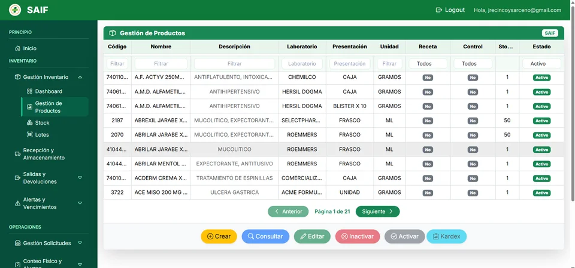
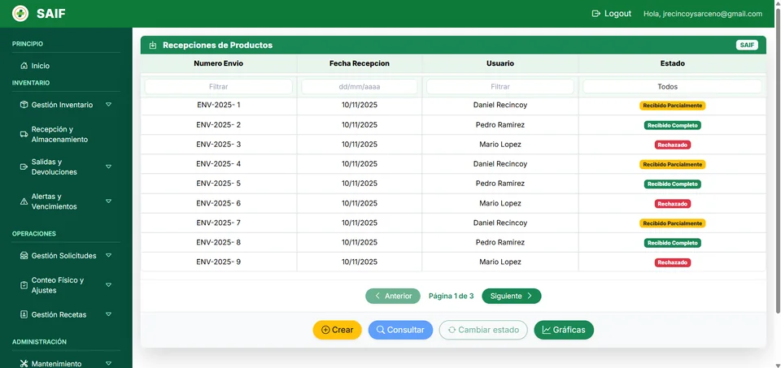
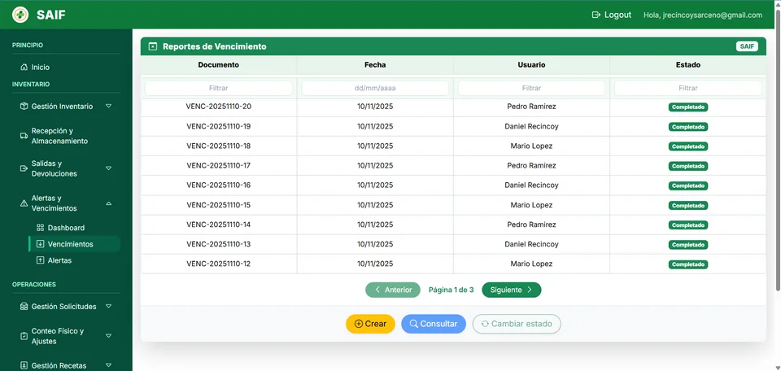
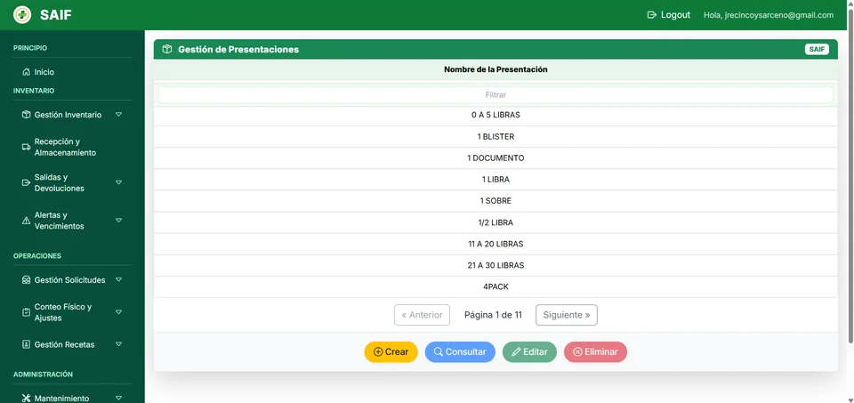

SAIF ·
Sistema de Administración de Inventario de Farmacia
Una aplicación web para gestionar inventario, recepciones, devoluciones y vencimientos en Farmacias Salud y Ahorro.
- Modalidad
- Proyecto académico colaborativo
- Equipo
- Cinco integrantes · Liderazgo técnico

Farmacias Salud y Ahorro
Contexto del proyecto
Problema
El inventario de farmacia requiere registrar las entradas, las salidas y las devoluciones, además de identificar productos próximos a vencer.
Solución
El equipo desarrolló un panel administrativo para gestionar productos e inventario farmacéutico, registrar recepciones y almacenamiento y controlar salidas y devoluciones. El sistema reúne alertas, reportes de vencimiento y controles administrativos.
Tecnologías del sistema
- Aplicación
- Python y Django para la lógica de la aplicación.
- Interfaz
- HTML5, CSS3 y JavaScript.
- Datos
- PostgreSQL para el registro de productos y operaciones de inventario.
Retos técnicos y soluciones
Existencias y vencimientos
El inventario registra la cantidad disponible y la fecha de caducidad de cada lote. El panel de alertas separa los lotes vencidos de los próximos a vencer, en ambos casos con existencias disponibles.
Reversión de recepciones
Al rechazar una recepción, el sistema verifica si hay salidas posteriores de los lotes involucrados. Cuando procede la reversión, cancela los movimientos de entrada y descuenta las cantidades recibidas.
Devoluciones por factura y lote
El sistema comprueba que el lote del producto figure en la factura original. Después reincorpora las unidades al lote y registra el movimiento de devolución.
Funcionalidades en pantalla
Cuatro vistas para recorrer el trabajo cotidiano de inventario.
Las capturas muestran datos de demostración.


Gestión de productos
Consulta del catálogo de inventario por código, laboratorio, presentación, unidad y estado.


Recepciones de productos
Registro y consulta de envíos con estados de recepción completa, parcial o rechazada.


Reportes de vencimiento
Consulta de reportes de vencimiento con filtros por documento, fecha, usuario y estado.


Gestión de presentaciones
Mantenimiento del catálogo de presentaciones. Las unidades de medida también se muestran en la gestión de productos.
Desarrollo e implementación
- Proceso
- El equipo trabajó los flujos de inventario, recepción y devoluciones desde el diseño hasta las pruebas.
- Mi participación
- Lideré el desarrollo técnico dentro de un equipo de cinco integrantes y participé desde el análisis hasta la implementación.
- Resultado
- El equipo implementó SAIF para Farmacias Salud y Ahorro.